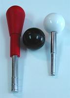
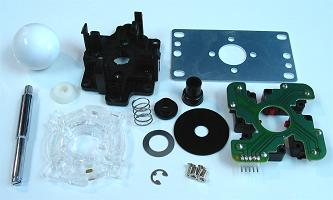
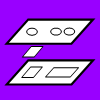
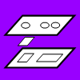
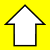
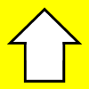

Joystick Components
This section summarizes the parts used in making a simple joystick. The parts of joysticks are also fairly simple.
Image: Labeled cross section of a generic joystick
Stick/Shaft
The rod in the joystick.
Handle/Top
The held part at the top of the stick which usually comes in two shapes: a ball top or tear drop/bat top.

Pivot
The area in which the shaft swivels. A part surrounding the shaft is usually placed here to assist in this; it comes in shapes like cylinders and half-spheres set in a plate that is contoured for smooth movement.
Spring
The mechanism most joysticks use for automatically resetting the shaft to neutral. Some joysticks use magnets for this. Thicker and/or larger springs make the reset stronger and movements more affected. A part is often added to secure the spring below the pivot.
Actuator
The actuator(s) gives the bottom of the shaft more area and precision in pressing the switches. Actuator can refer to a shaped enhancement surrounding the bottom of the shaft or the levers on levered microswitches.
E-Ring (Retaining Ring)
An E-ring (also called E-clip) is a small, flat, curved plate of metal shaped like the letter “E”; it is a type of retaining ring (also called a circlip or snap ring) which is a type of fastener. It attaches to the bottom of the shaft, aligning and securing the parts along it. This also puts some compression and tension in the spring so the joystick has and returns to a neutral position. It can be wedged-off using a flat screwdriver or something similar, and replaced using pliers. Another version is the C-ring; it pretty much needs retaining ring pliers (also called snap ring pliers) to remove and replace it. Other joysticks use a bolt or nut for the retaining function.
Mounting Plate
The plate of the joystick attached directly and securely to the control panel. This and the dust washer are the only two parts of the joystick that need to touch the control panel.
Guide/Dust Washer/Disk/Cover
With many names, this flat disk surrounds the shaft on top of the control panel to hide and protect the insides of the joystick and the hole in the panel. It also works to enhance play when part of the hand rests on it.
Restrictor Gate
A restrictor gate is a plate with a specifically shaped hole, like a square or circle, that determines physically where the joystick can be moved. It is generally attached on the bottom of the joystick, restricting the bottom of the shaft. Many joysticks do not come with restrictor gates and are always circularly restricted.
Wire Harness
Some joysticks have the microswitches attached to a PCB into which a wire harness (wires aligned along a plug) is inserted instead of having to wire each of the microswitches around the bottom of the joystick.

Miscellaneous
Various joystick models and makers add various other parts to tweak and complete the joystick. They add things like screws, housing, extra spacers and securers along the shaft, other plates for holding things like microswitches and the pivot, and other pieces that tweak various components.


 



 
